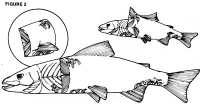
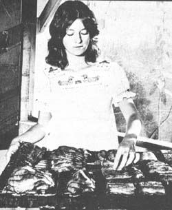
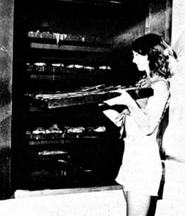

Can a fed-up corporate executive forfeit his pole position in the rat race, build a $500 smokehouse out in the country ... and rapidly begin earning more than $2,000 a month selling home-cured fish to bars and restaurants? Yep. Buck Taylor, a Florida man, has done just that ... and he insists that others (maybe you) can do it too!
In MOTHER NO. 39, Buck told you how he founded his enterprise, gave you tips on locating a dependable source of raw fish, showed you how to construct a smokehouse just like his, listed all the equipment you'll need to set yourself up in business, gave you the lowdown on pricing the fish you smoke, and projected the profits that such a venture can earn.
In the following pages, Mr. Taylor generously supplies the final bit of information that you must have to enter the fish-smoking business: his own personal "secrets" of dressing out and curing the fillets and other cuts that he so successfully sells.
Once you've finished the construction of your smokehouse and gathered together the necessary supplies, you're ready to smoke your first batch of fish. Which really means that you're ready to clean and dress your first fish.
Start by making a brine. It's easy. Just pour eleven pounds of salt into the tank (bathtub) you installed in the smokehouse. Fill the tub half full of water and stir well to dissolve the salt. Then add ice as necessary to keep the temperature of the brine at or below 60° Fahrenheit (check the temperature from time to time).
You can add as many or as few spices to the brine as you like. Just remember, though, that the extra ingredients cost extra money. Those two or three dollars' worth of seasonings must be reflected in the final taste of your product if you expect your customers to pay a premium price for the added touch.
I keep my overhead down by using just two spices-oregano and dried mustard-in my brine, and I find them all I need to give my fish the palate-pleasing aftertaste that my customers want. If you're determined to experiment with something fancier, however, here's some optional-and I repeat, optional -spices and flavorings that some smokers add to their brine: allspice, bay leaf, brown sugar, dill, garlic, ginger, honey, lemon juice, maple flavoring, molasses, onion salt, seasoned pepper, soy sauce, Tabasco, and white pepper.
As soon as your brine is ready and waiting (and remember to add a little ice from time to time to keep the solution at 60° F or lower), you can begin to clean and trim your fish.
Experience has shown me that the larger the individual fish, the better I like it when I'm preparing fillets for the oven. It's much easier to slice and trim four big 200-pounders than to dress out a hundred or so smaller fish. (I ought to know: Once I even cleaned an eight-foot-long, 548-pound blue marlin. You should've been there!)
Relatively large fish-those weighing more than, say, ten pounds-should he cut into slabs (see Fig. 2) for brining. Use your knife to make slits along the top and bottom of the critter's side parallel to its fins and backbone. Then cut across the fish just behind its head. When the knife hits bone, turn the blade sideways and work it toward the tail with a sawing motion while you keep the cutting edge as close to the backbone as possible to reduce waste. Use basically the same technique on the really "big 'uns" (fish weighing 150 pounds or more), but remove the chunks of flesh from the backbone one section at a time.
Billfish, incidentally, have concave hollows on either side
of their spines and, if you're not careful, these hollows will prevent your knife blade from getting down under all the meat attached to the backbone. Well I'm here to tell you that the strips of flesh which lie in these protected areas are absolutely the best-tasting parts of such fish and should be salvaged if at all possible. So push the pads of your fingers down against the bone and then slide them toward the critter's tail. The strips I'm talking about will come free quite easily . . . and are well worth the extra effort it takes to get them.
Any slabs of meat more than three inches thick should be sliced into smaller pieces so that the brine can penetrate them better. (If the solution can't work all the way through a thick chunk, the center of the piece won't cure properly.)
Smaller fish (trout, cats, snappers, etc.) that tip the scales at less than ten pounds can usually be split down the center, opened up, and smoked whole. Removal of the backbone from one of these "little 'uns" is optional, but the head should always be cut off and discarded.
Filleted or whole, large fish or small, leave the skin on all the pieces you smoke (it'll help reduce shrinkage). And one final tip: Remove the blood-strip (from the meat along the spine) of any fish that has one and throw the strip away. Yes, this adds to your waste . . . but it also greatly improves the taste of your finished product (and that, after all, is what will keep you in business).
After you've sliced out a batch of fillets, wash all the chunks of fish thoroughly in running water and drop them into the tank of brine to soak overnight. TIP: If you put all the thinner pieces into one end of the tub and all the thicker ones into the other, you'll find it easier to load your oven the next day. (Why? Because, sooner or later, you'll want to sort out the thin slabs-which, logically enough, require less curing-anyway, so you can put them on the trays which go into the top of the smoker ... farthest from the fire.)
Before you go home for the evening, double-check to make certain that every single morsel of fish is completely
covered by brine (even the merest corner of a fillet left sticking out of the solution overnight can spoil or will, at least, "taste funny" after it's smoked). It's also a good idea to cover the loaded tub with a sheet of plastic or a plywood top to keep out any insects that might have wandered into the smokehouse while you were working. No, a few bugs won't really hurt the fish you have soaking in the brine . . . but they have a way of expiring in the solution and winding up stuck to your choicest fillets. And customers are funny when it comes to finding such little surprises on the food they eat!
All finished? Fine. Now go home and get a good night's rest. You'll need it, because tomorrow's workday starts at 4:00 a.m.
When you return to the smokehouse in the morning, you'll find that all the soaking pieces of fish are covered with a slick film. Wash it off by pushing your hand along the entire surface of each fish, or piece of fish, while you hold it under running water. Then repeat the process without the running water. The first step forces excess brine from the fillets and washes off the surface of the chunks of fish. The second squeezes much of the remaining moisture from each piece of meat. Both are important : If you don't wash the brine away, the inside of your oven will soon become gummy. If you fail to force the excess water out of the fillets, your smoked fish will be soft and wet inside.
Cut the soaked and washed fillets into four-inch squares so that the heat will penetrate them more evenly. Then coat the smoker trays with vegetable oil (to prevent sticking), and place the slabs of meat- skin side down , with the chunks spaced 1/4 inch apart-on the racks.
At this point I like to sprinkle seasoned pepper on my fish (blue marlin, for instance, is so bland that I think it's necessary to spice the species up a bit). You'll have to decide for yourself, though, if the extra cost is justified (your customers will quickly let you know).
As each tray is filled, slide it into the oven. Leave the door open as you load the smoker-to facilitate air drying-and, once all the fish are in, go around to the other side of the curing chamber and start the fire.
Pull the firebox out, place paper and kindling in its bottom, some branches and very small logs on top, and start a blaze. When the fire is burning well, add a couple of larger logs and-as soon as the big chunks of wood are aflame-slide the firebox back into the oven and halfway close the firebox's trapdoor.
Back inside the smokehouse, tightly close the oven loading door and watch the thermometer mounted on it. When the temperature inside the oven approaches 100° F, crack the loading door about four inches or so (a small cloud of pleasant-smelling smoke should emerge).
You'll soon find that you call regulate the temperature in the smoking chamber with the oven's two doors. Open the trapdoor to allow more draft past the fire ... and the smoker will heat up. Close the trapdoor and it'll cool down. And whenever you find yourself in a real bind-with the temperature inside the oven skyrocketing and threatening to damage a whole load of fish-just pop the loading door open as wide and as long as it takes to dump out the excess Btu's.
Bear in mind at all times that the proper regulation of your smoker's temperature is extremely critical. Apply too little heat, and your fish will not become completely cured. Allow the temperature to climb too high, and the slabs of mea will glaze over oil the outside and remain raw in their centers. The moral is obvious: Watch your thermometer carefully and regulate the temperature of rour oven exactly as I tell you
The first two hours of the smoke cure-prolonged drying, really-are conducted with the loading door kept ajar and the firebox door positioned to maintain a temperature of 120° in the smoker. This is as critical as any part of the smoking operation, so keep a sharp eye on everything. A sudden gust through the fire door can quickly jump the temperature of the blaze a few degrees which, in turn, can cause the flame to grow even brighter. This won't cause you any real trouble if you're on top of the situation ... but you certainly can't just walk off and leave your load of fish to take its chances alone.
By the end of the first hour or so of this 120° treatment, your fillets will be dripping water like ferns in a rain forest and tiny bubbles will have risen oil the top of each slab of fish. This is normal for the low heat stage of the cure, and the more bubbles and drops of water, the better. Along about this time, too, you'll notice that your smokehouse is filling with [A] the delicate aroma of smoked fish and, quite possibly, [B] people you hardly even know. When strangers begin sniffing tile air and hanging around to make small talk, you know you're in the right business!
After your fish have cured two hours at 120°, close the oven's main door and open the trapdoor as much as necessary to raise the smoker's temperature to 140° F. The fillets will actually begin to cook now and (over a period of approximately five hours) will turn a golden brown.
Keep that oven smoky . If you can't see smoke coming out of the chimney, add bark, twigs, chips from tree Cuttings, etc., to the firebox. You're not trying to raise the temperature of the oven, remember, but you do want your fire to smoke profusely. (NOTE: Although some authorities recommend throwing handfuls of green branches and leaves on the blaze at this point to make its smoke thicker, I don't. Green wood and leaves, in my experience, can impart a nasty flavor to foods. Therefore, although I do use bark and twigs to increase the intensity of my fire's smoke during this phase of the cure, I always make sure that the chips, etc., are dry.)
Toward the end of the five-hour-long high-temperature part of the smoke cure, you can prod the pieces of fish with a finger. The slabs of meat should feel fairly solid ... and most definitely not soft or wet.
When your piscatorial pleasures are done just right, you'll know it! They'll be fit for a royal wedding banquet: golden brown, flaky, and barely moist inside. That's the way my fillets turn out anyway ... because that's the way my customers like them.
Then again, it's hard to predict just what your clientele will demand. Some people like their fish so thoroughly cured that it's downright difficult to chew ... others want it almost raw. Beer bars generally demand little two-ounce packages of very salty and hard-cured strips (that, when sold by the hundreds at 50 cents a pack, noticeably increase their patrons' consumption of brew), while cocktail lounges buy moist, flaky fillets, cut them into small bits, and give them away to their customers. You'll just have to experiment a little until you learn what the folks in your area prefer, and then adjust your drying and curing times-but not your oven's temperature!-accordingly.
When your fillets have smoked as long as you want them to, remove the trays of fish and set them out to cool for at least an hour. You can speed this part of the process, if you like, by setting up a fan or two to blow over the trays ... but don't try to hasten the cooling by putting the fish into a refrigerator while they're still warm. I made that serious mistake once, and found myself with an entire ovenload of soggy fillets on my hands!
Once the slabs of meat are completely smoked and have thoroughly cooled, they can be frozen quite nicely and stored for some time. The cured and cooled fish can also be kept in the refrigerator unfrozen for up to a week ... but I wouldn't try to store them any longer than that.
Work your way into this business slowly in the beginning. Try to line up your initial customers before you run off that first full ovenload of fish. You're wise to smoke a few small batches of fillets on your own at the very start just to prove that you know what you're doing and to provide some of your potential accounts with a sample of your wares. Curing a whole smoker full of fish, though, can run into real money (an investment of approximately $500), and you should definitely have a few buyers lined up before you take that plunge.
Sooner or later, the manager of one of the supermarkets or restaurants you try to sell to is going to ask you if you have product liability insurance. When that happens, you can either go on down the street and peddle your fish to someone else (and there's plenty of folks you can deal with who'll never think to ask the question) ... or you can take out a liability policy on your goods. The only trouble with the second course of action is the fact that the liability insurance you'll have to buy is enormously expensive (and, therefore, a liability in itself). It can cost as much as 2% of your gross business. I'll leave the insurance decision up to you.
And my final sage words are, stay with it ! It'll take some time for people to gain confidence in your operation and begin buying from you regularly. In the meantime, even though your income may be only a fraction of what it will later become, you'll have to keep right on hauling wood, buying fish, cleaning the critters, carrying away garbage, manning the smoker, calling on customers, etc. Don't let that initial breaking-in period discourage you. I happen to know that, if you put out a good product, this little do-it-yourself business can support several people comfortably. Be enthusiastic! Keep plugging away!
I'm not here to tell you that being self-employed is easy. But take it from me (and I've lived both ways), I'd much rather be smoking fish in my own little enterprise than working myself into an early heart attack while doing something I hate just to make money I don't need.
In short, if you want to be as independent as I now am ... start smoking!
EDITOR 'S NOTE: This has been the second of a two-part article. The first installment-in which the author explained how to buy fish, build a smokehouse, price the final product to the customer, and handle other details of the business-appeared in MOTHER NO. 39.
We hear so much about "hickory smoked" these and those that some folks think hickory is the only fuel that can be used in the smoking process. This is simply not true, so don't panic if you find that you have no source of hickory with which to feed your oven.
What you want for your cure is smoke (and not necessarily, as many people think, hot smoke) that will both help preserve your fish and impart an appealing taste to it.
This means that what you DON'T want are softwoods of any kind. The wood from pine, cedar, hemlock, spruce-any tree, in short, that doesn't shed its needles in the fall-contains resins and pitch that both coat the meat in a smoker without preserving it and add an unpleasant taste to the fillets being cured.
What you DO want are hardwoods (trees that lose their leaves every winter). Apple, ash, beech, birch, butternut,
cherry, chestnut, hickory, mangrove, maple, oak, sweet bay, and walnut are all good ... as are almost any other hardwood you can name. You can even work a pretty fair cure with manzanita roots, trimmings from grapevines, and corncobs if you have to.
Remember, though, that it's the smoke you're after more than the heat when you build that first fire in your oven. If the fuel burns too fast, dampen it with a little water.
You'll soon learn when to add wood to your firebox and how much to put in at a time. (The design of your oven, the type of wood you burn, the size of your logs, how heavily you load the smoker, etc., will all affect the situation.) In general, I add two four-inch-thick logs every hour during the low-temperature phase of the cure and slightly more fuel each hour after the temperature is raised.
|
 After seven hours in the oven, yourfillets will befit for a banquet: goldenbrown, flaky, barely moist. |
 A smoker full of fish represents aninvestment of $500. Thus, a big loadlike this has got to have waiting buyers! |
 |